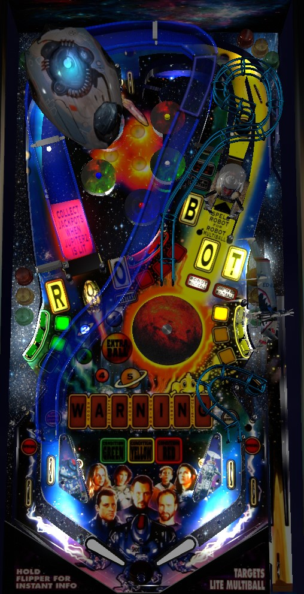

The two best sources of scoring in the game are Robot Multiball (spell Robot by shooting shots flashing for R-O-B-O-T letters) or Condition Red Multiball (hit any 3 green targets, then any 3 yellow targets, then any 3 red targets). Fighter Multiball is not worth the trouble it takes to start. In Robot Multiball, shoot R-O-B-O-T shots until Warning is spelled, then collect a repeatable super jackpot at the robot toy (second O); in Condition Red Multiball, collect jackpots at the left ramp, and raise the jackpot by hitting all 9 green, yellow, and red standup targets.
There is no skill shot. Plunge the ball and it will be caught by a magnet at the top of the game. The magnet will drop that ball through one of the top lanes, which gives credit for one bumper advance toward Fighter Multiball. If only one bumper advance was needed to start Fighter Multiball, then Fighter Multiball will start on the plunge, unless the game's launcher malfunctions and the ball does not make it to the top lanes, coming down the right orbit instead.
There are 3 multiballs to play. With no conventional modes or wizard goal to play for, multiballs are the main scoring draw on Lost In Space. It is not possible to stack any multiball with any other. If you play all 3 types of multiball on the same ball, a 25,000,000-point "3 in 1" award is added to the base end of ball bonus.
Condition Red Multiball
Hit any of the three green standup targets in the lower left to earn one hit toward Condition Green. 3 hits completes Condition Green. Do the same with the yellow targets in the lower right, then the red targets in the center to advance to Condition Yellow, then Condition Red. At Condition Red, shoot the right orbit to start Condition Red Multiball.
In Condition Red Multiball, the left ramp is always lit for a jackpot. The jackpot starts at 5,000,000 points. During this multiball, hit a red, yellow, or green target to light it. Lighting all 9 targets adds 10,000,000 points to all jackpots for the rest of multiball, and resets the targets so the jackpot can be raised again. If there is a maximum jackpot value, it is at least 325,000,000 points, which is absolutely ridiculous; most Condition Red Multiballs don't see jackpots much higher than 25,000,000 points.
Robot Multiball
Shoot the 5 shots that each have a letter in the word Robot in front of them. A flashing letter signifies that it can be collected; a lit letter means that it has already been collected. For the first Robot Multiball, you can collect the 5 R-O-B-O-T letters in any order. After that, you must spell R-O-B-O-T in order, but it always only takes one shot to collect each letter and never gets harder after the 2nd Robot Multiball. Once Robot is spelled, shoot the robot toy (the shot corresponding to the second O) to start Robot Multiball.
At the start of Robot Multiball, all 5 R-O-B-O-T shots are flashing for a jackpot. Collecting a jackpot scores 5,000,000 points and a letter in the word Warning. Once a jackpot is collected, you cannot collect another jackpot from the same shot until you've earned a jackpot from all 5 R-O-B-O-T shots or until Warning is fully spelled. Once Warning is spelled, the robot toy will be lit for a 20,000,000 point Super Jackpot that can be collected repeatedly until multiball ends. By default, the Warning letters are a carryover feature, with progress that persists across players and games; I can only assume that when the game is put into Tournament Mode, each player works on their own set of Warning letters, otherwise Lost In Space would be a pretty terrible competitive game. Robot Multiball tends to be the highest scoring of the three multiballs.
Fighter Multiball
At the start of the game and immediately after a Fighter Multiball is played, all 5 bumpers have a value of 10,000 points. To advance a random bumper, roll through any top lane, or make the left in lane followed by the B shot (does not need to be done immediately, just in that order). Advancing a bumper consists of increasing that bumper's value by 10,000 points. A bumper cannot be advanced for a second time until all bumpers have been advanced once. To start the first Fighter Multiball, you need to advance all bumpers once (5 total advances). Each subsequent Fighter Multiball requires one more set of advances (5 more advances total) than the last; the highest I have seen it go is 20 total advances required for the 4th multiball. As soon as you reach the required number of advances, Fighter Multiball instantly begins.
In Fighter Multiball, the B shot and both orbits are always lit for jackpots. Jackpots start at 3,000,000 points and are increased by the value of every pop bumper hit during multiball. Collecting a jackpot resets the jackpot value back to 3,000,000, but it can be built up again. If there is a max jackpot value, it is at least 10,500,000 points. This tends to be the lowest-scoring and most grind-heavy of the three multiballs, and later on, the requirements for starting it scale so much that it's not worth trying for at all- 20+ shots for Fighter Multiball is a waste of time and energy when Robot Multiball is never more than 6 shots away and Condition Red Multiball is never more than 10 shots away.
At any time other than Condition Red Multiball, shooting the left ramp gives a countdown to an increasing award.
...then the entire sequence resets. When you have 5 or fewer ramp shots to go, the numbered planets in front of the ramp will tell you how close you are, or you can always find the remaining number of ramps and the next award in the Instant Info. I assume that the first extra ball listed above can come earlier in the sequence based on the game's autopercentaging for extra ball awards.
Shooting the center scoop when it is not lit adds 10,000 points to the value of the spinners in the left orbit and the B shot. The spinners start at 10,000 points and can be increased to a maximum of 50,000 points per spin.
Shooting the B shot lights the center scoop for Mystery until it is collected. The right in lane lights the center scoop for Mystery for just a few seconds. Shoot the center scoop when lit for a Mystery award. Possible awards include:
This list may not be exhaustive.
Lost In Space has a conventional in/out lane setup. The left in lane lights the B shot for advancing a bumper toward Fighter Multiball; the B shot stays lit until collected. The right in lane light the center scoop for mystery, but only for a few seconds. Out lanes score 1,000,000 points and can (presumably) be lit for Special from one of the Mystery awards.
There is a center peg between/below the flippers.
Bonus is calculated as 1,000,000 points, plus 100,000 for each red/yellow/green target hit on the current ball that advanced toward Condition Red Multiball, plus 100,000 points per left ramp shot on the current ball, plus 100,000 points per R-O-B-O-T letter collected during single ball play on the current ball, plus 25,000,000 points if all 3 multiballs were played on the current ball, all multiplied by the bonus multiplier. Bonus multiplier is only awarded as a Mystery award and can go at least as high as 4x. End of ball bonus is generally only meaningful if you manage to get a couple multipliers from the Mystery or if you get the 25,000,000 from the 3-in-1 award. Bonus is extremely important if you get both, as it can be worth 100,000,000 points or more at the end of your ball. I do not know of any way to collect the bonus mid-ball or hold any part of the bonus or multiplier from one ball to the next.
I am not sure what point value extra balls or specials might have in competition/novelty play.
| If you need... | Try... |
| 1,000,000 points | shooting the ramp a couple times. |
| 3,000,000 points | collecting a Mystery award. |
| 5,000,000 points | hitting the flashing bank of standup targets 3 times to advance the Condition toward Condition Red Multiball. |
| 10,000,000 points | collecting a Ramp award. |
| 25,000,000 points | playing Robot Multiball. 25,000,000 points is the value of an average Robot Multiball that does not make it to the Super Jackpot phase (due to there not being many Warning letters lit when it is started). |
| 50,000,000 points or more | playing Robot Multiball with the goal of reaching the Super Jackpot phase, or playing Condition Red Multiball with the intention of raising the jackpot from the standup targets first. To make up a high-8- or 9-figure deficit, you're going to need to grind out 20,000,000 point Robot Super Jackpots or high-value Condition Red jackpots. |